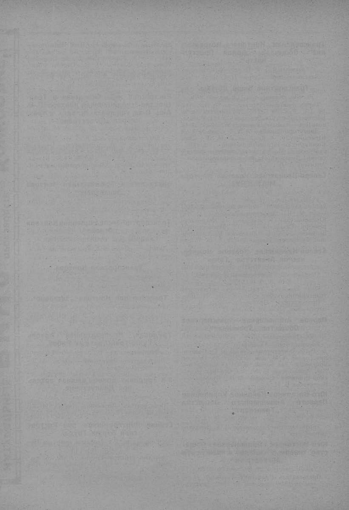

Лист источника 156
Скан

Распознанный текст
□□□□□□□□□□□, □□□□□□□□□, Новороссийск, базарная площ., телефон
№ 1-97.
Шульманъ Захарій Яковле-
вичъ, базарная площ., тел. № 4-61.
Фридляндъ Лейзеръ Давидо-
вичъ, базарная площ., тел. № 3-92.
Харитоновъ Николай Григорье-
вичъ, Новороссийск, базарная
площ., тел. № 4-92.
Сельско-Хозяйственныя ма-
шины и орудія.
«Эльворти Робертъ и Томасъ»,
акц. общ., Новороссийск, Портовая,
домъ «Азовско-Донского Коммер-
ческаго Банка», телефонъ № 1-40.
Сельско-Хозяйственные продук-
ты (пшеница, кукуруза, овесъ,
ячмень, масличныя семена,
мука, отруби).
Акціонерное Общество «Россій-
скій Экспортъ», Вокзальная, соб-
ственный домъ, телеф. № 2-04.
«Асмоловъ и К° В. И.», торгово-
промышленное Товарищество,
Новороссийск, Кольцовская, собст-
венный домъ, телеф. № 1-04.
Братья Гроссманъ, контора, Но-
вороссийск, базарная площ., телеф.
№ 1-84.
Братья Кобіевы, торговый домъ,
Новороссийск, Серебряковская, домъ
Перовскаго, тел. № 1-83.
«Вѣсы», акціонерное общество,
Новороссийск, Портовая, собств. домъ,
тел. № 1-73.
«Волга», волжско-черноморское
торгово-промышленное общество,
Новороссийск, Серебряковская, домъ
Туркина, тел. № 1-54.
«Гельферихъ-Саде», акц. общ.,
Новороссийск, Портовая, домъ «Рус-
скаго для внѣшней торговли Бан-
ка», телефонъ № 2-27.
«Дрейфусъ Луи и К°», контора,
Новороссийск, Серебряковская, домъ
Вульфсона, тел. № 88.
«Животовскій Абрамъ и Дми-
трій», торговый домъ, Новороссийск,
Портовая, собств. домъ, тел. № 2-05.
Исаковичъ Исаакъ Соломоно-
вичъ, контора, Новороссийск, Пор-
товая, домъ Трахтенберга, тел.
№ 3-17.
Мардеръ Соломонъ Лейбовичъ,
Новороссийск, Портовая, д. «Рус-
скаго для внѣшней торговли Бан-
ка», телефонъ № 3-41.
Мордуховичъ Борухъ Мееровичъ,
Новороссийск, Портовая, домъ Мее-
ровичъ, тел. № 1-17.
«Нефть», русское товарищество,
Новороссийск, Набережная, собств.
домъ, тел. № 1-46.
Новороссийское Экспортное То-
варищество, Портовая, домъ Трах-
тенберга, тел. № 2-46.
«Океанъ», русское транспортное
и страховое общество, Новороссийск,
Портовая, домъ «Русскаго для
внѣшней торговли Банка», тел.
№ 2-12.
«Раллі бр. и К°», контора, Но-
вороссийск, Портовая, д. «Азовско-
Донскаго Коммерческаго Банка»,
тел. № 1-37.
Таганрогское па Dual □□□□□□□,
Новороссийск, Портовая, собств.
домъ, тел. № 4-29.
Таганрогское па Dual □□□□□□,
Новороссийск, Портовая, собств.
домъ, тел. № 4-82.
Товарищество мукомольной мель-
ницы бывш. А. Ф. Пеховскаго,
Новороссийск, Фортштадтъ, собств.
домъ, тел. № 1-38.
Торгово-Промышленное Товари-
щество «Ростовскій на Дону Муко-
мольный комбинатъ», Вокзальная,
собственный домъ, тел. № 2-04.
Туркинъ Иванъ Евдокимовичъ,
Новороссийск, Серебряковская, соб-
ственный домъ, тел. № 1-54.
Файнъ Аронъ-Гершъ Лейбовичъ,
Новороссийск, Портовая, д. «Азов-
ско-Донскаго Банка», телефонъ
№ 3-47.
Фридляндъ Гершъ Лейзеровичъ,
Новороссийск, базарная площадь,
тел. № 3-92.
Сельско-Хозяйственныя орудія
(склады).
«Азовско-Черноморское Товари-
щество», Портовая, домъ «Азовско-
Донскаго Банка», тел. № 1-40.
Сельскохозяйственныя общества.
«Сѣверный Кавказъ», сельскохо-
зяйственное общество, Новороссийск,
Серебряковская, тел. № 4-11.
Сѣно и солома.
Калашниковъ Иванъ Василье-
вичъ, базарная площ., тел. № 2-19.
Королевъ Георгій Васильевичъ,
базарная площ., тел. № 2-20.
Кузнецовъ Александръ Василье-
вичъ, базарная площ., тел. № 2-83.